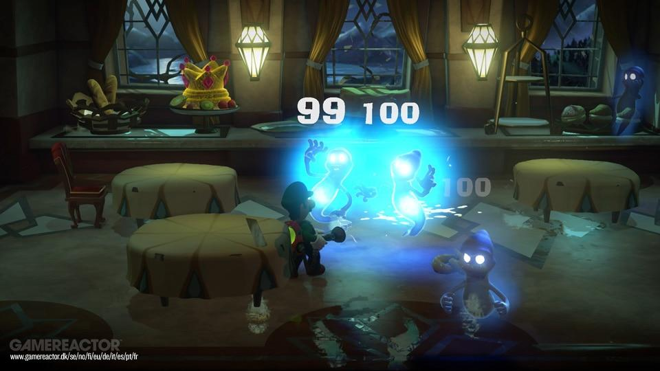
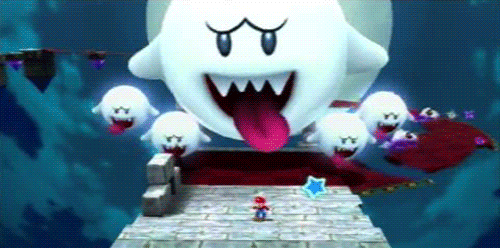

La obra nace en un momento donde los Survival Horror arrasaban en crítica y ventas. Unos años donde grandes del género como Resident Evil o Silent Hill nacían y se convertían en auténticos bombazos. La compañía nipona recogió el testigo y agrupó alguno de los elementos característicos del género y los llevó al Reino Champiñón. Elementos como los fantasmas o la mansión encantada en la que transcurre el juego no parecían tan compatibles con el mundo de Mario como acabaron siendo. Nos olvidamos de ambientes coloridos y agradables por una mansión encantada, qué a pesar de contar con una estética tétrica, seguía sin olvidarse de adaptarse a todos los públicos. De esta manera queda una personalidad dentro del juego que lo hacía y sigue haciendo de los más único. Algo que lo hace reconocible con solo jugarlo unos segundos.
2. Una bocanada de aire fresco en lo jugable

Uno de los puntos fuertes de la mayoría de juegos de Nintendo es su jugabilidad, dejando en cada una de sus entregas un apartado jugable muy pulido y mecánicas de lo más originales.
En este caso Luigi’s Mansion utiliza algunas mecánicas de los survival horror como la posibilidad de aturdir a los enemigos con una linterna pero reestructura todo de tal manera que nosotros seremos los cazadores en vez de los cazados gracias a nuestra aspiradora. Una mecánica jugable que no deja de crecer ofreciendo capacidad de coger cosas y lanzarlas con nuestra Succionaentes 3000, también podremos congelar o prender fuego a nuestros enemigos en el caso que lo requiera.
De esta manera convirtieron una mecánica aparentemente sencilla en algo terroríficamente divertido y que da la sensación de mejora y reto en el jugador al batirse con cada fantasma. Por lo que el juego no se hace repetitivo ya que tendremos que resolver el rompecabezas que es cada rival encontrando su punto débil o la manera más acertada de atacarle. El juego es tan único y bien realizado en lo jugable que la experiencia a día de hoy sigue siendo igual de agradable, un envejecimiento del que pocos títulos pueden alardear.
3. Enemigos únicos y más profundos

Ni hordas de zombis ni tortugas que lanzan martillos. El juego solo mantiene a los Boos como enemigos característicos del Reino Champiñón, a partir de ahí plantea distintos fantasmas genéricos que iremos encontrando por toda la mansión.
Aunque los más destacables son los fantasmas mucho más humanos que encontraremos en cada habitación, dejando ver los distintos miembros que habitaban a mansión y que han acabado atrapados en ella. Luigi’s Mansion se aleja de todo presentándonos a fantasmas como los miembros de una familia, donde encima podemos ver como la mayoría huyen de nosotros y pocos nos intentan hacer daño de manera directa. Un enfoque poco visto por la compañía nipona a la hora de presentar un juego y que da mucha personalidad a cada estancia del título, dejando huella en el jugador.